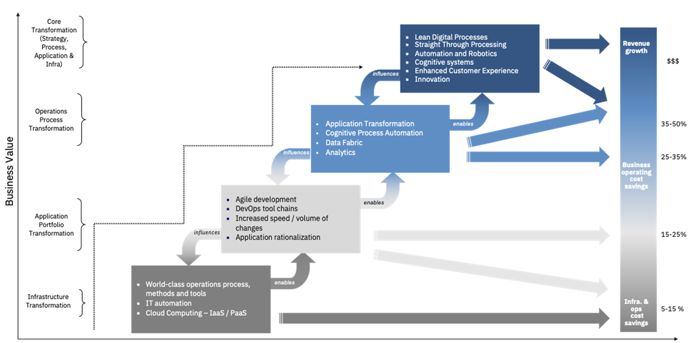

Financial Models
Table of Contents
Overview
Financial models for IT are evolving too, in line with the evolving digital enterprise and how they operate. Here are some of the key attributes of a suitable financial model to enable the enterprise to function effectively as an innovative organization and with agility:
- Asset light - Shifting from CAPEX to OPEX and dynamic accounting models
- IT Spend as a % of Customer Growth & Revenue Potential, ARPU
- Consumption driven IT economics
- Benefit & Value driven, not cost constraint decisions
- Committed investments to transform, start-up seed funding to innovate
- Optimise to Re-Invest
Cloud Economic Considerations
An enterprise can generate value for itself from cloud by a combination of optimizing its IT infrastructure & operational cost and innovating its way to new revenue that it could not realize earlier.
| Cloud Economics |
|---|
 |
- Efficiently Utilize Cloud Resources
- Proactively identify and eliminate unused resources
- Identify and optimize idle resources
- Right size resources for efficient cost and performance
- Operational Optimization of Cloud Resources
- Leverage dynamic auto scaling for cost optimized performance
- Identify opportunities for movement to lower cost instances/families
- Optimize and reduce operational costs of data resources
- Balance performance and costs of cloud resources
- Financial Governance Mechanisms for Cost Management
- Structural governance: Evaluate cost implications during design
- Role governance: Determine the access, provisioning and budget authority for defined cloud roles
- User governance: Create “menus” of available patterns for each role with cloud provisioning authority
- Quality governance: Audit effectiveness and adherence to governance across all three levels
- Pricing, Reserving and Discounting of Cloud Resources
- Evaluate bulk pricing options for potential discounts prior to provisioning
- Monitor use of cloud resources against purchased discounts
- Utilize automated recommendations and alerting to identify opportunities for bulk purchases based on usage trends
Value Levers
Different levels of value can be realized through layers of transformation:
| Costing Layers |
|---|
|  |
Value is driven through an exhaustive set of levers across 5 sources and needs to be supported by a business case. These are the 5 sources:
- Business acceleration
- Get 3.5X more benefit than public only
- New insights and better client experiences
- Faster time to market for all your apps
- Innovation in a secure, consistent way
- Application modernization
- Speed app release from months to weeks
- Modernize 66% more apps
- Consistent skills and agile dev ops
- Automation and less rework.
- Infrastructure cost efficiency
- Cut infrastructure costs by 4x with less maintenance
- 95% incident reduction/higher resiliency
- Greater utilization
- 10% infra cost savings
- Regulatory and risk
- Reduce compliance
- Spend by ~25%
- Gain a single pane of control
- Consistent security/compliance policies
- Automation on a consistent stack
- Strategic optionality
- Realize a more agile, flexible architecture
- Avoid vendor lock in
- Match workloads to the right model
- Optimize cost by moving workloads